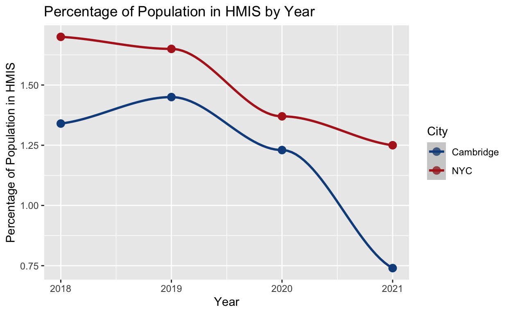
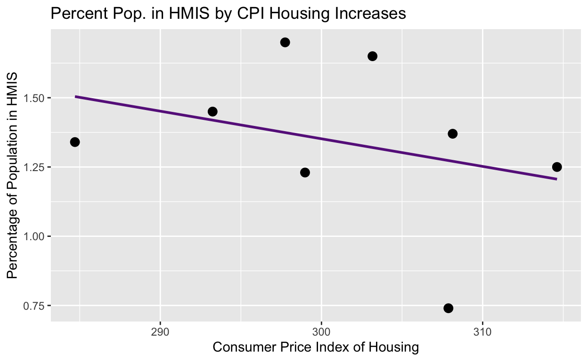

Observational data analysis of the explanatory power of rises in the Consumer Price Index cost of housing and the Department of Housing and Urban Development’s annual budget on the percentages of NYC and Cambridge populations in the Homeless Management Information System
Homelessness is a big problem across the United States, especially following the pandemic. Visible signs of its occurrence like encampments and city sweeps have increasingly been the topic of news stories, and the crisis of people living without homes has become a popular legislative policy topic. Homelessness is a critical policy area, and understanding the factors that influence it is critical for solving it. Many factors are thought to influence levels of homelessness, from the rising costs of housing to the Congressionally-allocated budget resources available to the federal Department of Housing and Urban Development (HUD). In this project, I seek to answer a research question of how changes in HUD’s budget and the cost of housing affect city-level changes in homelessness. To measure this, I will code regressions charting as independent variables the changes in annual HUD budgetary resources and the Consumer Price Index (CPI) of housing against the dependent variable, the number of people in HUD’s Homeless Management Information System (HMIS), a nationwide coordinated care tool for tracking and supporting the homeless. I will focus on two cities, Cambridge, Massachusetts and New York, New York, looking at HMIS counts for their Continuums of Care (MA-509 and NY-600) and CPI levels for their Metropolitan Statistical Areas. I hypothesize that increases in the cost of housing will correlate with increases in the numbers of people experiencing homelessness and that increases in HUD’s budget will correlate with decreases in the numbers of people experiencing homelessness. If HUD’s budget works, than more money to support its programs which combat homelessness should track to lower levels of homelessness. Similarly, if rising rents and housing costs are related to increasing levels of homelessness, than I should see a correlation between increases in the CPI of housing and levels of homelessness. The results of this analysis have important policy implications, for if these variables have explanatory power over homelessness they can be good targets for policy actions to mitigate the crisis.
I combined information from three different datasets for this project. My first independent variable, HUD’s annual budget, comes from an open data source on federal government spending published by the United States government. Its data comes from annual enacted Congressional budgets. My second independent variable, the Consumer Price Index of housing in the New York City and Cambridge statistical metropolitan areas, comes from the US Bureau of Labor Statistics, the government agency tracking inflation, unemployment, and other relevant labor statistics. The CPI specifically measures “the average change over time in the prices paid by urban consumers” and represents functionally the increases in the cost of living in a place. It is calculated by dividing the cost of a good, in this case housing, in one year by a baseline year and multiplying by 100 to get a percentage tracking how much the cost of the item has gone up. The baseline year from the Bureau of Labor Statistics is 1982-84, and the value for this index year is 100. The value range for 2018-2021 is 284 to 314, meaning that the cost of housing has gone up to 314% of its cost in 1982 in 2021. My dependent variable, the counts of people in HMIS in Cambridge and NYC, comes from the “HUDCoCSystemPerformanceMeasures” dataset published on Tableau, a free data sharing and visualization platform, by HUD. This data comes from Continuums of Care across the country, which are the homelessness management and coordination zones that report data about various aspects of homelessness within their CoC to HUD each year.
Here is a table summarizing the data I used in this project.
library(tidyverse)
library(broom)
library(infer)
library(ggplot2)
library(dplyr)
library(gapminder)
total_data <- read_csv("Total Data.csv")
knitr::kable(total_data,
col.names = c("Year", "CoC", "Percent in HMIS", "HUD Budget", "CPI Housing"))| Year | CoC | Percent in HMIS | HUD Budget | CPI Housing |
|---|---|---|---|---|
| 2018 | 1 | 1.34 | 170.407 | 284.704 |
| 2019 | 1 | 1.45 | 179.156 | 293.246 |
| 2020 | 1 | 1.23 | 213.425 | 298.980 |
| 2021 | 1 | 0.74 | 231.411 | 307.876 |
| 2018 | 0 | 1.70 | 170.407 | 297.744 |
| 2019 | 0 | 1.65 | 179.156 | 303.166 |
| 2020 | 0 | 1.37 | 213.425 | 308.141 |
| 2021 | 0 | 1.25 | 231.411 | 314.613 |
This data is fairly straightforward, but “CoC” represents the Continuum of Care being examined. The CoC indicated by number “1” is Cambridge (CoC = MA-509) and by number “0” is New York City (CoC = NY-600). “Percent in HMIS” refers to the percentage of the city’s population in HMIS, or experiencing homelessness, which I calculated by dividing the count of people in HMIS for each city by the population of the city that year. “HUD Budget” represents the annual budgetary resources available to HUD in billions of dollars, and I have inflation-adjusted them to the year 2021. “CPI Housing” represents the increases in cost of housing over time for average urban consumers in the Boston-Cambridge-Newton metropolitan statistical area for Cambridge and the New York-Newark-Jersey City metropolitan statistical area for New York City.
Below is a plot of my dependent variable, the percentage of each city experiencing homelessness, by year.
total_data <- read_csv("Total Data.csv") |>
mutate(City = if_else(coc_number == 1, "Cambridge", "NYC"))
total_data# A tibble: 8 × 6
year coc_number percent_hmis hud_budget cpi_housing City
<dbl> <dbl> <dbl> <dbl> <dbl> <chr>
1 2018 1 1.34 170. 285. Cambridge
2 2019 1 1.45 179. 293. Cambridge
3 2020 1 1.23 213. 299. Cambridge
4 2021 1 0.74 231. 308. Cambridge
5 2018 0 1.7 170. 298. NYC
6 2019 0 1.65 179. 303. NYC
7 2020 0 1.37 213. 308. NYC
8 2021 0 1.25 231. 315. NYC total_data |>
ggplot(aes(x=year, y=percent_hmis, color = City)) +
scale_color_manual(values=c("dodgerblue4","firebrick")) +
geom_point(size=3) +
geom_smooth(aes(color = City)) +
labs(title = "Percentage of Population in HMIS by Year", x="Year", y="Percentage of Population in HMIS")
This graph displays the fluctuation in percentages of each city experiencing homelessness that I hope to understand further by examining correlations with changes in HUD budgets and the CPI housing statistics.
hmis_hud_reg <- lm(percent_hmis ~ hud_budget, data = total_data)
hmis_hud_reg
Call:
lm(formula = percent_hmis ~ hud_budget, data = total_data)
Coefficients:
(Intercept) hud_budget
3.035950 -0.008533 glance(hmis_hud_reg)# A tibble: 1 × 12
r.squared adj.r.squ…¹ sigma stati…² p.value df logLik AIC BIC
<dbl> <dbl> <dbl> <dbl> <dbl> <dbl> <dbl> <dbl> <dbl>
1 0.581 0.511 0.208 8.32 0.0279 1 2.37 1.27 1.51
# … with 3 more variables: deviance <dbl>, df.residual <int>,
# nobs <int>, and abbreviated variable names ¹adj.r.squared,
# ²statistictotal_data |>
ggplot(aes(x=hud_budget, y=percent_hmis)) +
geom_point(size=3) +
geom_smooth(method = "lm", se = FALSE, color = "darkorchid4") +
labs(title="Percent Pop. in HMIS by HUD Budget Increases", x="2021 Inflation-Adjusted HUD Budget (in billions of dollars)", y = "Percentage of Population in HMIS")The HUD budget coefficient is -0.0085, meaning that for every billion dollar increase in HUD budget funding, the percentage of people in HMIS goes down by -0.0085 percent. The R-squared value for this regression is 0.58, which is a correlation of medium strength. It essentially can be interpreted to mean that 58% of the variation in HMIS percentages can be attributed to HUD budget shifts, which is not a very high amount but is still significant. The graph visualizes this regression.
hmis_cpi_reg <- lm(percent_hmis ~ cpi_housing, data = total_data)
hmis_cpi_reg
Call:
lm(formula = percent_hmis ~ cpi_housing, data = total_data)
Coefficients:
(Intercept) cpi_housing
4.343407 -0.009972 glance(hmis_cpi_reg)# A tibble: 1 × 12
r.squared adj.r.squ…¹ sigma stati…² p.value df logLik AIC BIC
<dbl> <dbl> <dbl> <dbl> <dbl> <dbl> <dbl> <dbl> <dbl>
1 0.101 -0.0488 0.305 0.674 0.443 1 -0.689 7.38 7.62
# … with 3 more variables: deviance <dbl>, df.residual <int>,
# nobs <int>, and abbreviated variable names ¹adj.r.squared,
# ²statistictotal_data |>
ggplot(aes(x=cpi_housing, y=percent_hmis)) +
geom_point(size=3) +
geom_smooth(method = "lm", se = FALSE, color = "darkorchid4") +
labs(title="Percent Pop. in HMIS by CPI Housing Increases", x="Consumer Price Index of Housing", y = "Percentage of Population in HMIS")
The CPI housing coefficient is about -0.01, meaning that for every unit increase in Consumer Price Index of Housing (reflecting inflationary increases in housing costs) the percentage of the population experiencing homelessness decreases by -0.01 percent. This is not a very strong correlation, however, with an R-squared value of only 0.1. This essentially means that only 10% of variation in homelessness percentages has to do with the price of housing. This graph visualizes this regression relationship.
multiple_regression <- lm(percent_hmis ~ hud_budget + cpi_housing, data = total_data)
multiple_regression
Call:
lm(formula = percent_hmis ~ hud_budget + cpi_housing, data = total_data)
Coefficients:
(Intercept) hud_budget cpi_housing
-3.14814 -0.01575 0.02530 glance(multiple_regression)# A tibble: 1 × 12
r.squared adj.r.squ…¹ sigma stati…² p.value df logLik AIC BIC
<dbl> <dbl> <dbl> <dbl> <dbl> <dbl> <dbl> <dbl> <dbl>
1 0.816 0.742 0.151 11.1 0.0145 2 5.66 -3.31 -2.99
# … with 3 more variables: deviance <dbl>, df.residual <int>,
# nobs <int>, and abbreviated variable names ¹adj.r.squared,
# ²statisticmodelsummary::modelsummary(list(multiple_regression))| Model 1 | |
|---|---|
| (Intercept) | −3.148 |
| (2.485) | |
| hud_budget | −0.016 |
| (0.004) | |
| cpi_housing | 0.025 |
| (0.010) | |
| Num.Obs. | 8 |
| R2 | 0.816 |
| R2 Adj. | 0.742 |
| AIC | −3.3 |
| BIC | −3.0 |
| Log.Lik. | 5.656 |
| RMSE | 0.12 |
The results of this multiple regression have new coefficients for HUD budget and CPI housing values. The coefficient for HUD budget is about -0.016, meaning that for each billion dollar increase in HUD budgetary resources, the level of people enrolled in HMIS goes down by -0.016 percent while holding the effects of the consumer price index of housing constant. The coefficient for CPI housing is 0.025, meaning that for each unit increase in the cost of housing, the percentage of people experiencing homelessness in a city goes up by 0.025 percent holding the effects of the HUD budget constant. This is actually very interesting, because by doing a multiple regression and holding the effects of the HUD budget constant, the relationship between CPI of housing and homelessness reversed. In the single regression above, the relationship was that increases in CPI tracked with decreases in homelessness. This regression shows that when taking into account and holding constant HUD budgets, the relationship is actually that CPI increases correlate with increases in homelessness. The R-squared value, or explanatory power of this multiple regression, is much higher than it was for either individually, falling in at about 0.82, meaning that 82% of variance in percentages of people experiencing homelessness correlates with HUD budget and CPI housing shifts
My results show a medium-strength correlation for HUD budget increases and decreases in the percentages of city populations experiencing homelessness (-0.0085 coefficient, 0.58 R-squared). They show a weak correlation between the increase in the cost of housing and a decrease in the proportion of people experiencing homelessness in cities (-0.01 coefficient, 0.1 R-squared). However, this relationship is reversed in the more controlled multiple regression analysis, which shows a correlation with fairly strong explanatory power between increases in HUD budget and lower percentages of a city’s population experiencing homelessness and increased costs of housing and increased homelessness. The multiple regression supports my hypothesis that increased HUD budgets and lower costs of housing are linked to lower levels of homelessness in cities. As the coefficients state, for each unit increase in CPI housing, homelessness increases by 0.025%, and fo each billion dollar increase in HUD funding, homelessness decreases by -0.016% It has fairly strong statistical significance due to a strong R-squared value of 0.82, and I interpret this cautiously as being causal to some degree. These findings are limited for many reasons, however. To begin with, they analyze data from only two cities, Cambridge and NYC, to make claims about national HUD spending on cities around the country. The data sample size should be expanded for more externally applicable results. To do this, it would be useful for an agency like HUD to compile its homelessness data with potentially causal factors like budget information or CPI results, as no such dataset exists and I had to cobble together my own from multiple sources. Another issue is that not all homeless people are in HMIS – only those accessing shelter resources or other programming make it into the program. This regression analysis does not accomodate the many homeless people outside the system, making it not fully reflective of all homeless people, just the ones who access resources. Also, this analysis lacks a control or well-validated research design. A control for this project would look like evaluating changes in the non-homeless population in response to CPI and HUD budget. This value is sort of represented in this analysis by nature of the way I am calculating homelessness - as a percentage of the population at large of a city in HMIS - and so the people not experiencing homelessness are sort of represented in that calculation. It does not really function as a control, however. A better controlled study could look like tracking the numbers of people who exitec homelessness and/or became homeless as a function of HUD budget and CPI of housing levels, and then control could be assigned to those who were not homeless to start or who did not become homeless. Better data is necessary for these calculations. Additionally, there are many factors leading to homelessness. While my results indicate that HUD budgets and costs of housing are two such causes, they are by no means the whole story. Without extremely extensive research, it is hard to know what the most causal factors influencing homelessness are, and this report does not claim to have the answer. It does suggest that CPI and HUD budgets are influential, though, and are good targets for policy actions aiming to mitigate the homelessness crisis. This analysis has many flaws, both in terms of data access, research design, and causal determination; however, its conclusion that together, and controlling for each, the rising cost of housing and increased HUD budgets both correlate strongly with percentags of city’s experiencing homelessness when viewed via a multiple regression, an important conclusion for policymakers looking to curb the crisis.